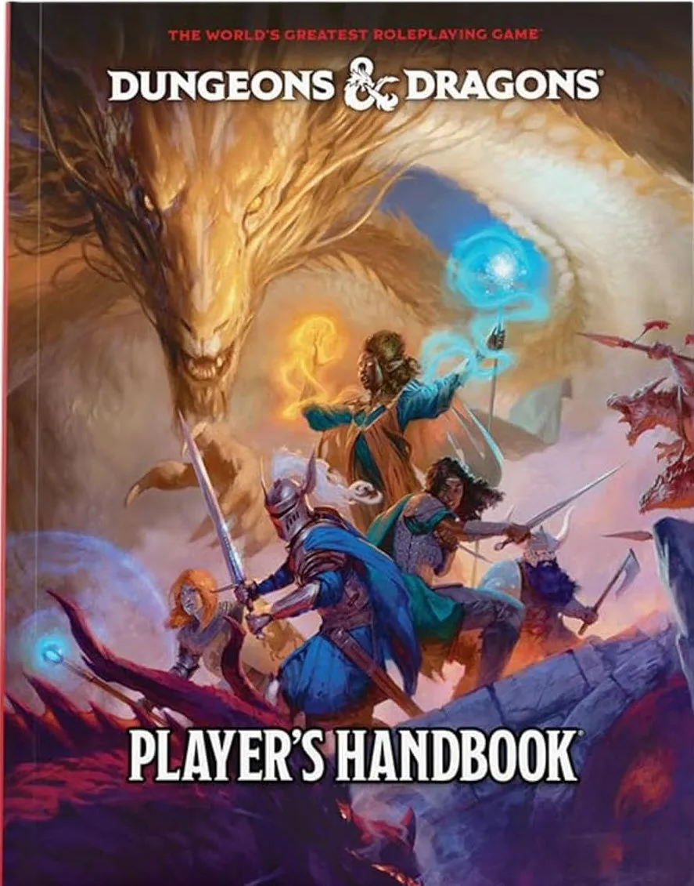
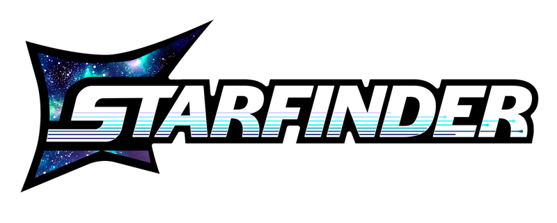
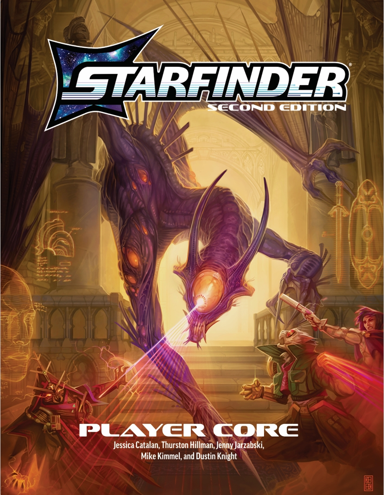
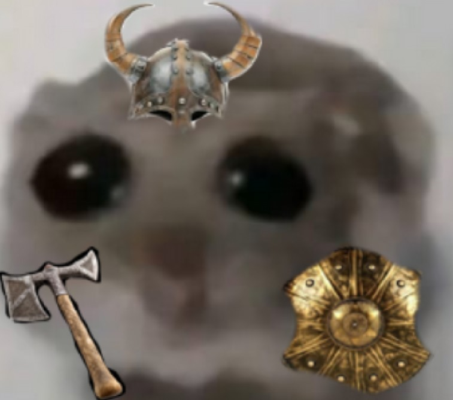

Ancora in sviluppo

Benvenuti nella stanza digitale di
Pedro Lo Gnappo

Pedro vi offre queste guide Easy Peasy per creare i vostri pg aiutandovi, brutti pigroni, a evitare ore e ore di lettura dei mattoni chiamati rolebook.
Detto ciò buona creazione e Simone... puoi solo scegliere il mago sennò ti smito.